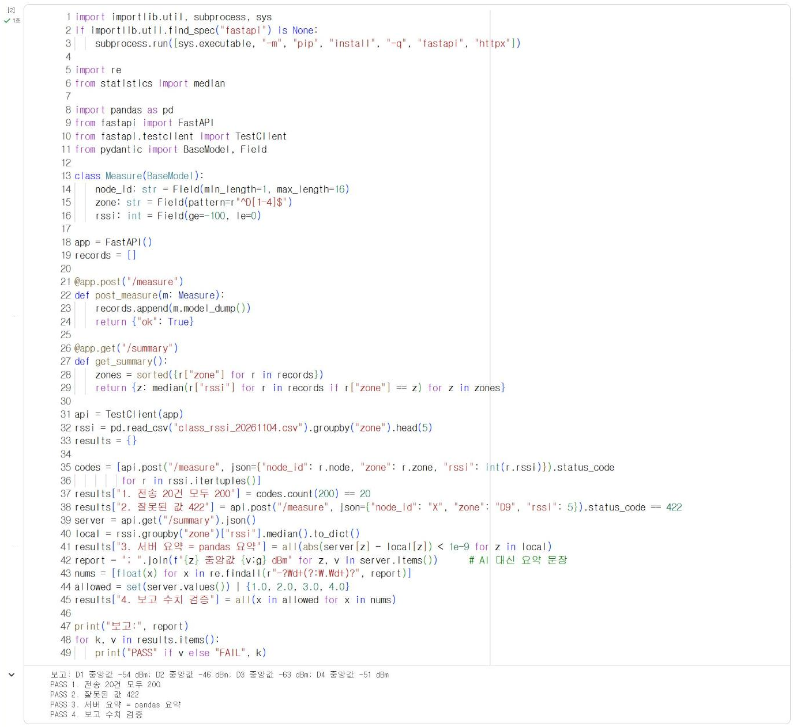
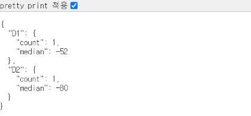

15.1 시스템 통합 점검표¶
팀 프로젝트는 여러 구성 요소가 차례로 자료를 넘기는 구조다. 각 구성 요소가 혼자서는 정상이어도, 연결 지점에서 형식이 맞지 않거나 한쪽이 응답하지 않으면 시스템 전체가 동작하지 않는다. 통합 점검은 자료가 흐르는 순서대로 연결 지점을 하나씩 확인하는 절차다.
구성 요소와 연결 지점¶
| 순서 | 구성 요소 | 넘기는 자료 | 다음 구성 요소 | 관련 장 |
|---|---|---|---|---|
| 1 | 사이버파이 센서 | 측정값 | 기기 판정 함수 | 4·7장 |
| 2 | 기기 판정·표시 | 판정 결과, JSON 측정값 | Wi-Fi 전송 | 7·8장 |
| 3 | Wi-Fi 전송 | UDP 데이터그램(JSON 측정값) | 수신 서버 | 8·15장 |
| 4 | 수신 서버 | 저장 기록, 판정 결과 | 요약 통계 | 14장 |
| 5 | 요약 통계 | 요약값 | 생성형 AI 보고 | 13장 |
| 6 | 생성형 AI 보고 | 보고 문장 | 출력 검증 | 13장 |
구성 요소별 점검 항목¶
| 구성 요소 | 점검 항목 | 확인 방법 | 기대 결과 |
|---|---|---|---|
| 센서 | 측정값 범위 | 기기 화면 출력(4.6절) | 조도·소리 0~100, 정지 시 가속도 값 거의 일정 |
| 기기 판정 | 경계값 판정 | 2.4절 방식의 경계값 시험 | 임계값 바로 위·아래에서 단계가 바뀜 |
| 기기 표시 | LED 색과 화면 | 단계별 조작(7.4절) | 단계와 색이 일치 |
| Wi-Fi | 접속과 IP | 기기 화면 「WiFi OK」, IP 표시(8.2절) | 교내망 IP 배정 |
| 전송 | 서버 응답 | 기기 화면 「send OK」 | 서버 응답 수신 |
| 서버 수신 | 형식 검증 | /docs 시험 전송(8.3·14.2절) |
정상 200, 잘못된 값 422 |
| 서버 판정 | 기록 재생 | 14.4절 재생 시험 | 판정 집계가 분석 결과와 일치 |
| 요약 | 요약 통계 | pandas 산출값과 대조 | 일치 |
| AI 보고 | 수치 검증 | check_report(13.4절) |
요약값에 없는 수치 없음 |
| 대체 보고 | AI 불통 시 | API 키를 지우고 실행 | 요약 표로 보고 |
통합 점검 코드¶
서버 수신부터 보고까지의 연결은 기기 없이 Colab에서 한 번에 점검할 수 있다. 다음 코드는 14장의 수신 서버와 13.4절의 검증 함수를 간단히 다시 정의하고, 지점마다 기록 5건씩 모두 20건을 전송한 뒤 각 연결 지점의 결과를 PASS·FAIL로 출력한다.
import importlib.util, subprocess, sys
if importlib.util.find_spec("fastapi") is None:
subprocess.run([sys.executable, "-m", "pip", "install", "-q", "fastapi", "httpx"])
import re
from statistics import median
import pandas as pd
from fastapi import FastAPI
from fastapi.testclient import TestClient
from pydantic import BaseModel, Field
class Measure(BaseModel):
node_id: str = Field(min_length=1, max_length=16)
zone: str = Field(pattern=r"^D[1-4]$")
rssi: int = Field(ge=-100, le=0)
app = FastAPI()
records = []
@app.post("/measure")
def post_measure(m: Measure):
records.append(m.model_dump())
return {"ok": True}
@app.get("/summary")
def get_summary():
zones = sorted({r["zone"] for r in records})
return {z: median(r["rssi"] for r in records if r["zone"] == z) for z in zones}
api = TestClient(app)
rssi = pd.read_csv("class_rssi_20261104.csv").groupby("zone").head(5)
results = {}
codes = [api.post("/measure", json={"node_id": r.node, "zone": r.zone, "rssi": int(r.rssi)}).status_code
for r in rssi.itertuples()]
results["1. 전송 20건 모두 200"] = codes.count(200) == 20
results["2. 잘못된 값 422"] = api.post("/measure", json={"node_id": "X", "zone": "D9", "rssi": 5}).status_code == 422
server = api.get("/summary").json()
local = rssi.groupby("zone")["rssi"].median().to_dict()
results["3. 서버 요약 = pandas 요약"] = all(abs(server[z] - local[z]) < 1e-9 for z in local)
report = "; ".join(f"{z} 중앙값 {v:g} dBm" for z, v in server.items()) # AI 대신 요약 문장
nums = [float(x) for x in re.findall(r"-?\d+(?:\.\d+)?", report)]
allowed = set(server.values()) | {1.0, 2.0, 3.0, 4.0}
results["4. 보고 수치 검증"] = all(x in allowed for x in nums)
print("보고:", report)
for k, v in results.items():
print("PASS" if v else "FAIL", k)
실행 결과
보고: D1 중앙값 -54 dBm; D2 중앙값 -46 dBm; D3 중앙값 -63 dBm; D4 중앙값 -51 dBm
PASS 1. 전송 20건 모두 200
PASS 2. 잘못된 값 422
PASS 3. 서버 요약 = pandas 요약
PASS 4. 보고 수치 검증

네 항목이 모두 PASS이면 서버 수신부터 보고까지의 연결이 정상이다. 이 코드에서는 API 키 없이 실행되도록 AI 보고 대신 요약 문장을 코드로 생성했다. 팀 프로젝트에서는 이 자리에 13.4절의 safe_report를 연결하고, 생성된 문장을 같은 방법으로 검증한다. 하나라도 FAIL이면 해당 번호의 연결 지점부터 확인한다.
기기와 팀 서버의 연결¶
8.2절의 기기 프로그램은 측정값을 UDP로 전송한다. 14장에서 작성한 팀 서버는 HTTP 요청만 수신하므로, 기기의 측정값을 받으려면 UDP 수신부를 추가해야 한다. 수업 서버도 같은 구조로 UDP를 수신한다. 다음 코드를 14.3절까지 작성한 main.py의 끝에 추가한다.
# PC 전용: main.py 끝에 추가하는 사이버파이 UDP 수신부
import json
import socket
import threading
UDP_PORT = 8611 # 8.2절 기기 코드의 UDP_PORT와 같은 값
def udp_listener():
s = socket.socket(socket.AF_INET, socket.SOCK_DGRAM)
s.bind(("0.0.0.0", UDP_PORT)) # PC의 모든 네트워크 장치에서 수신
print("UDP 수신 대기:", UDP_PORT)
while True:
data, addr = s.recvfrom(512)
try:
m = Measure(**json.loads(data)) # 14.2절 모델로 형식 검증
level = judge_rssi(m.zone, m.rssi) # 14.3절 판정 함수
records.append({**m.model_dump(), "level": level})
s.sendto(b"200 ok", addr) # 8.2절 send_udp가 b"200" 포함 여부를 확인
print("UDP", m.node_id, m.zone, m.rssi, level, "from", addr[0])
except Exception as e:
s.sendto(b"err", addr)
print("UDP 거부:", type(e).__name__)
threading.Thread(target=udp_listener, daemon=True).start()
| 코드 | 기능 |
|---|---|
socket.SOCK_DGRAM |
UDP 소켓 생성(8.2절 기기 코드와 같은 방식) |
s.bind(("0.0.0.0", UDP_PORT)) |
지정한 포트로 들어오는 데이터그램을 수신 |
s.recvfrom(512) |
데이터그램 하나와 보낸 기기의 주소를 반환할 때까지 대기 |
Measure(**json.loads(data)) |
JSON 문자열을 딕셔너리로 변환한 뒤 14.2절 모델로 검증. 형식이 틀리면 예외 발생 |
threading.Thread(…, daemon=True) |
UDP 수신을 별도 실행 흐름(스레드)으로 실행. HTTP 서버와 동시에 동작 |
recvfrom은 데이터그램이 도착할 때까지 대기하므로, 서버의 주 실행 흐름에서 호출하면 HTTP 요청을 처리하지 못한다. 그래서 별도 스레드에서 실행한다. 서버는 기기가 PC에 접속할 수 있도록 --host 0.0.0.0으로 실행한다.
기기를 연결하기 전에 같은 PC에서 기기 대신 UDP 측정값을 전송해 수신부를 시험한다. 다음 fake_node.py는 8.2절 send_udp와 같은 구조로 정상 측정값 2건과 잘못된 측정값 2건을 전송하고, 서버의 응답을 출력한다. 서버를 실행한 명령 창은 그대로 두고, 다른 명령 창에서 python fake_node.py로 실행한다.
# PC 전용: fake_node.py — 기기 대신 UDP 측정값을 전송하는 시험 프로그램
import json
import socket
SERVER_IP = "127.0.0.1" # 같은 PC에서 시험
UDP_PORT = 8611
def send_udp(body):
s = socket.socket(socket.AF_INET, socket.SOCK_DGRAM)
s.settimeout(3)
try:
s.sendto(body.encode(), (SERVER_IP, UDP_PORT))
return s.recv(64)
except OSError as e: # 응답 없음(시간 초과) 포함
return type(e).__name__
finally:
s.close()
tests = [{"node_id": "CP-01", "zone": "D1", "rssi": -52},
{"node_id": "CP-02", "zone": "D2", "rssi": -80},
{"node_id": "CP-03", "zone": "D9", "rssi": -60}]
for t in tests:
print(t, "->", send_udp(json.dumps(t)))
print("not json ->", send_udp("not json"))
fake_node.py 실행 결과
{'node_id': 'CP-01', 'zone': 'D1', 'rssi': -52} -> b'200 ok'
{'node_id': 'CP-02', 'zone': 'D2', 'rssi': -80} -> b'200 ok'
{'node_id': 'CP-03', 'zone': 'D9', 'rssi': -60} -> b'err'
not json -> b'err'
서버 명령 창 출력
UDP 수신 대기: 8611
INFO: Started server process [9060]
INFO: Waiting for application startup.
INFO: Application startup complete.
INFO: Uvicorn running on http://0.0.0.0:8620 (Press CTRL+C to quit)
UDP CP-01 D1 -52 정상 from 127.0.0.1
UDP CP-02 D2 -80 경고 from 127.0.0.1
UDP 거부: ValidationError
UDP 거부: JSONDecodeError
INFO: 127.0.0.1:64696 - "GET /summary HTTP/1.1" 200 OK

정상 측정값 2건은 200 ok 응답과 함께 저장·판정되었다. D2의 −80 dBm은 D2의 10% 분위수 −77 dBm보다 낮으므로 경고로 판정되었다. 지점이 D9인 측정값은 14.2절 모델의 검증에서 ValidationError로, JSON 형식이 아닌 문자열은 JSONDecodeError로 거부되고 err가 응답되었다. 8.2절의 send_udp는 응답에 200이 없으면 실패로 처리하므로, 기기 화면에는 「send FAIL」이 표시된다.
기기 연결 확인 범위
UDP 수신부와 fake_node.py의 동작은 PC에서 확인했다. 실제 사이버파이에서 팀 서버로 전송하는 시험은 기기 대여 시 8.2절 코드의 SERVER_IP를 팀 서버 PC의 IP 주소로 변경해 진행한다. PC의 IP 주소는 Windows 명령 창의 ipconfig에서 「IPv4 주소」로 확인한다. Windows 방화벽이 Python의 네트워크 접근 허용을 물으면 허용해야 기기의 데이터그램이 수신된다(부록 C).
점검 기록¶
통합 점검은 코드를 수정할 때마다 반복한다. 팀은 다음 표를 복사해 날짜별로 기록한다.
| 날짜 | 점검 항목 | 결과 | 문제와 조치 |
|---|---|---|---|
| 센서·기기 판정·표시 | |||
| Wi-Fi·전송 | |||
| 서버 수신·판정 | |||
| 요약·AI 보고·검증 |
확인 문제¶
- 본인 팀 프로젝트의 구성 요소와 연결 지점을 위 표 형식으로 작성하시오.
- 통합 점검 코드에 「판정 결과가 정상·주의·경고 중 하나인가」를 점검하는 항목을 추가하시오(14.3절
/judge사용). - 기기 쪽 연결 지점(센서~전송)을 기기 화면만으로 점검하는 순서를 작성하시오.